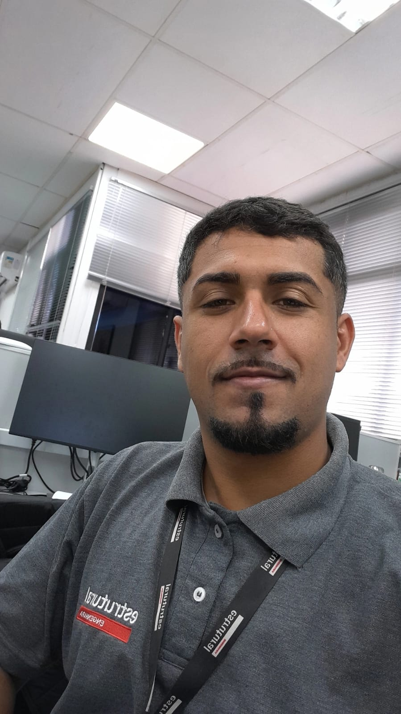

Marcio Rodrigues da Rocha 👨💻
Estudante de Engenharia de Produção (UFF) & Desenvolvedor de Soluções Industriais.
Graduando em Engenharia de Produção com formação técnica em Mecânica Industrial (CFT Ativo) e sólida experiência em Medição, Planejamento, PCP e controle de processos no setor de óleo e gás.
Atuo diretamente com a análise de Relatórios de Ocorrência, Programações de Fabricação, documentação técnica e desenvolvimento de dashboards integrados no Power BI.
Possuo perfil analítico, com foco em melhoria de processos, análise de dados, gestão de projetos e suporte à tomada de decisão, buscando sempre ser a ponte perfeita entre os métodos da engenharia tradicional e as inovações da Indústria 4.0.
Experiência Profissional
💼 Auxiliar de Técnico de Planejamento (Medição)
09/2025 - AtualEstrutural Serviços Industriais Ltda | Macaé, RJ
- Acompanhamento e controle de vendas de materiais processados.
- Análise e elaboração de Relatórios de Ocorrência no SAMC/Petrobras e conferência para cobrança de HH e validação de fatores de U.S.
- Análise de Programações de Fabricação e acompanhamento de cronogramas.
- Leitura e interpretação de desenhos técnicos de tubulação e estruturas, controle de documentação técnica e mapeamento de processos.
- Desenvolvimento de dashboards em Power BI para acompanhamento de KPIs, com atualização automática via Gateway local e SharePoint.
⚙️ Estágio em Engenharia
09/2024 - 09/2025Estrutural Serviços Industriais Ltda | Macaé, RJ
- Atuação nos setores de Planejamento, Medição e PCP, com apoio às rotinas de controle, orçamento e acompanhamento contratual.
- Análise de Solicitações de Serviço no SAMC/Petrobras (Contrato de Tanques) e apoio em pleitos contratuais.
- Leitura e interpretação de mapas navais, planos de bloqueio offshore e RDC de fábrica.
- Elaboração de cronogramas no Microsoft Project, orçamentos de medição, listas de materiais e planilhas avançadas de controle.
💧 Operador em Estação de Tratamento de Efluentes
SAAE-RO | Rio das Ostras, RJ
- Operação e monitoramento de processos em Estação de Tratamento de Efluentes Sanitários.
- Acompanhamento de indicadores, inspeção de bombas e componentes do sistema de tratamento.
- Registro de dados operacionais, apoio na identificação de falhas, desvios e execução de manutenções preventivas básicas.
Formação Acadêmica
🎓 Engenharia de Produção (Bacharelado)
Universidade Federal Fluminense (UFF) | 01/2020 - 12/2026
Trajetória acadêmica alinhada às demandas da indústria de óleo e gás, com disciplinas e projetos relacionados a operações offshore.
🔧 Técnico em Mecânica Industrial
Centro de Profissionalização e Ed. Técnica (CPET) | CFT Ativo
Formação com eixo tecnológico em Controle e Processos Industriais. 01/2025 - 01/2026.
Projeto Acadêmico
Cursos e Treinamentos
Ferramentas e Tecnologias
As principais tecnologias utilizadas para construir processos inteligentes e sistemas de apoio à decisão.
Python
Backend & Automação
Power BI
Dashboards & BI
PostgreSQL
Banco de Dados
Frontend Web
HTML, CSS, JS Avançado
FlexSim
Simulação Industrial
Pronto para otimizar processos?
Estou sempre em busca de novos desafios, aprendizados e networking. Vamos construir o futuro juntos.
Entrar em Contato